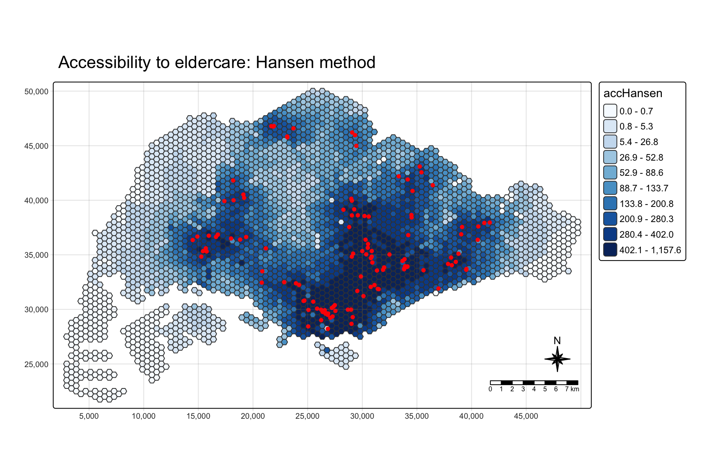
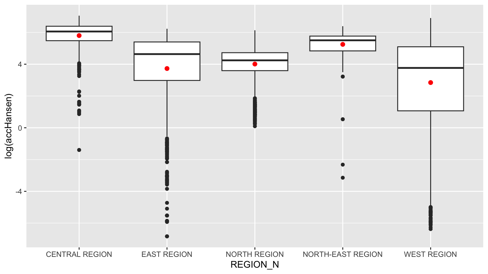
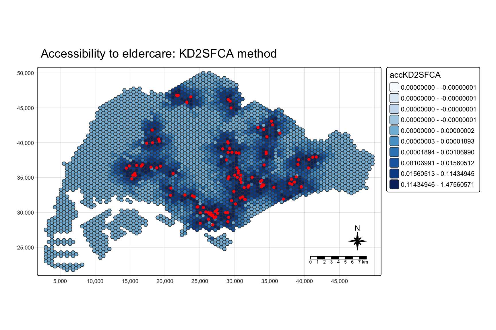
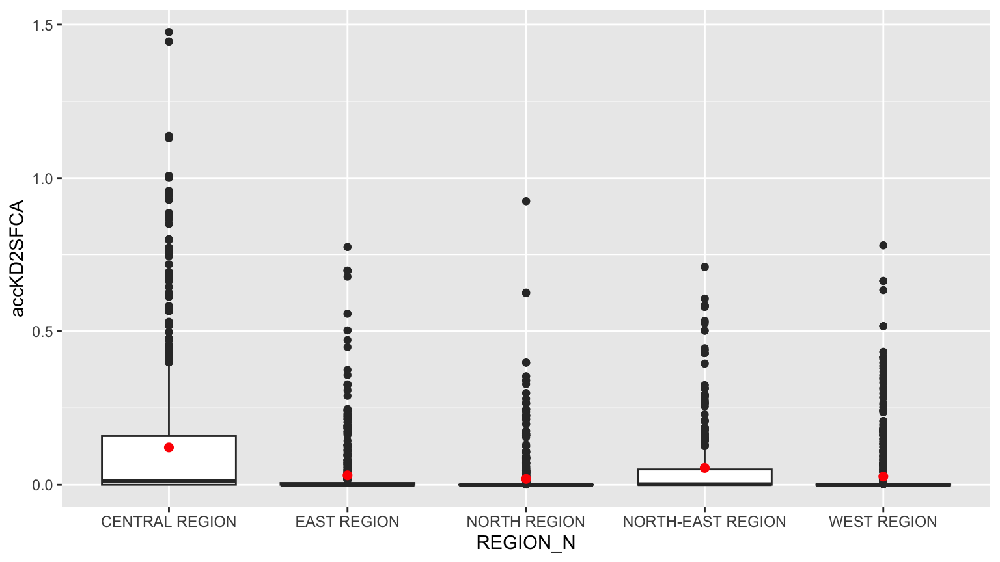
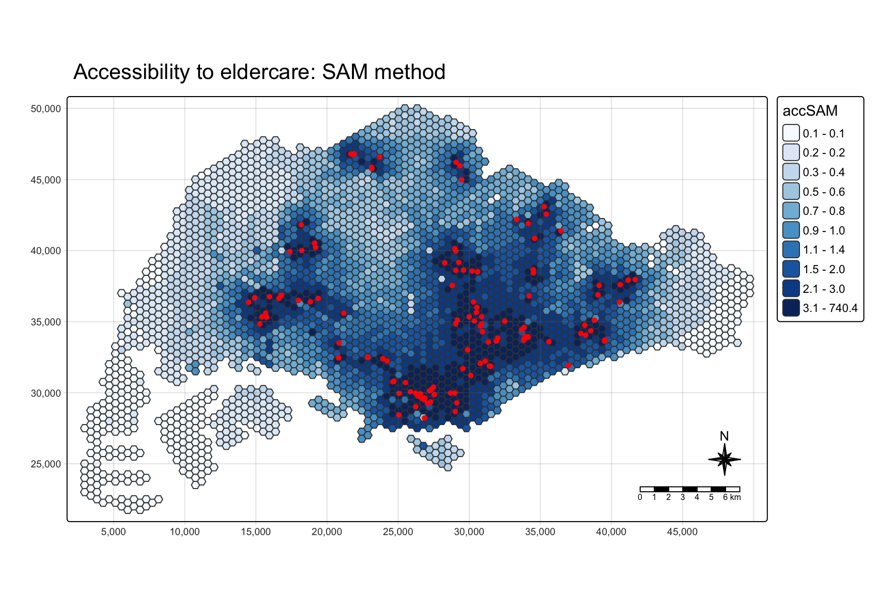
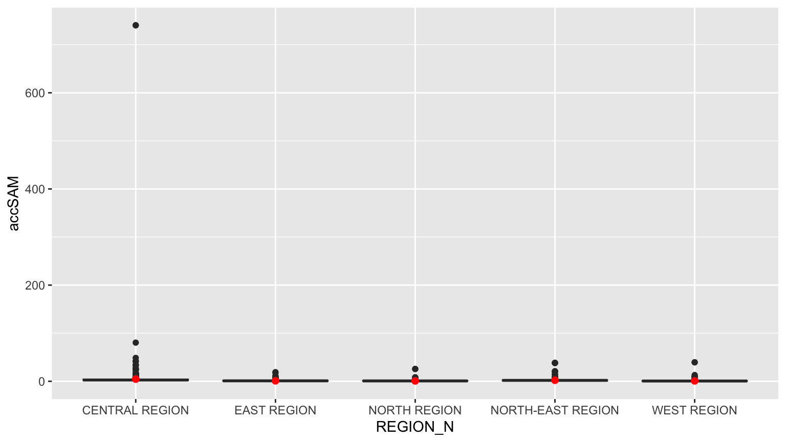
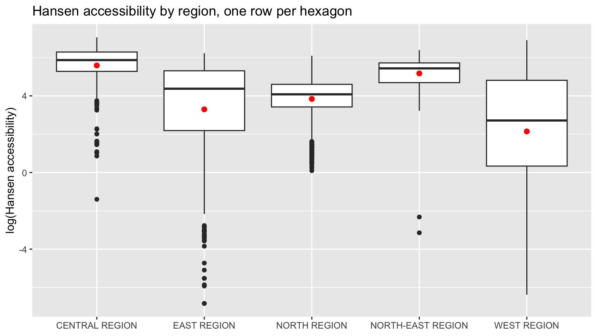
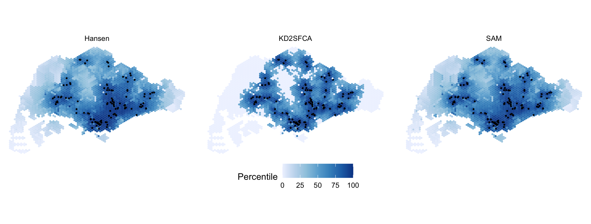
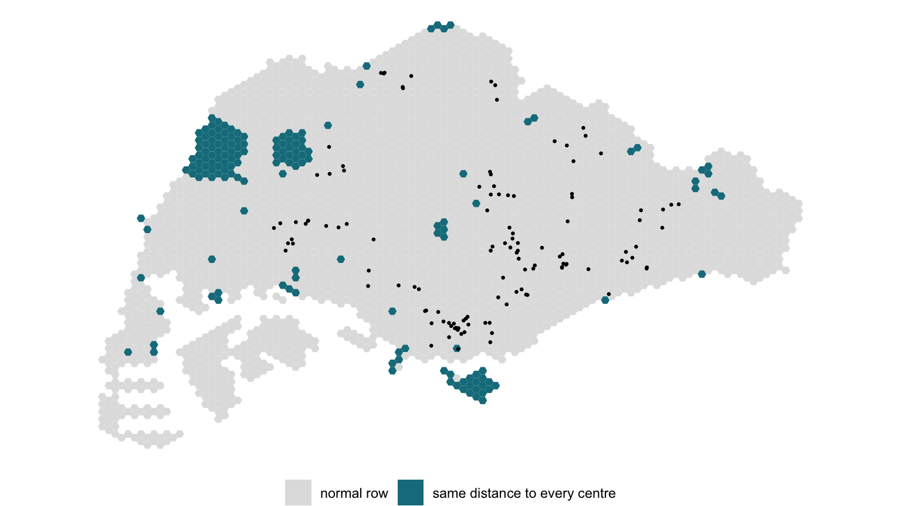

pacman::p_load(tmap, SpatialAcc, sf,
ggstatsplot, reshape2,
tidyverse)Modelling Geographical Accessibility
HANDS-ON EXERCISE 7
R SpatialAcc Hansen KD2SFCA SAM Eldercare
This exercise follows Modelling Geographical Accessibility, the reading for the Geographic Accessibility block of the course.
1. Overview
Exercise 6 grouped places by what they contain. This one asks how easily people in one place can reach something located somewhere else: here, how far each part of Singapore is from an eldercare centre, once distance along the road network is taken into account.
Accessibility models answer questions such as which neighbourhoods are underserved, and which would lose most if a facility closed or two were merged. The exercise uses three of them, all from the SpatialAcc package, and they do not measure the same thing:
- Hansen’s potential model adds up every centre’s capacity, discounted by how far away it is. It ignores demand entirely: a centre counts the same whether ten people or ten thousand share it.
- KD2SFCA (kernel density two-step floating catchment area) first works out how much capacity each centre offers per unit of demand within a catchment, then sums those ratios for each origin, again discounted by distance. Competition for the same centre lowers everyone’s score.
- SAM (Spatial Accessibility Measure) divides each centre’s capacity by the origin’s demand and by distance raised to a power, then sums.
The study unit is a grid of 250 m hexagons rather than planning subzones, so the result is not tied to administrative boundaries of very different sizes.
2. The Data
| Dataset | Description | Format |
|---|---|---|
MP14_SUBZONE_NO_SEA_PL |
URA Master Plan 2014 subzone boundaries, 323 subzones | ESRI Shapefile (polygon) |
hexagons |
3,125 hexagons of 250 m radius covering the main island | ESRI Shapefile (polygon) |
ELDERCARE |
120 eldercare service locations from data.gov.sg | ESRI Shapefile (point) |
OD_Matrix.csv |
Road network distance from every hexagon to every centre, in metres | CSV, 375,000 rows |
OD_Matrix.csv has six fields: origin_id (a hexagon’s fid), destination_id (a centre’s fid), entry_cost (from the origin to the nearest road), network_cost (along the road network), exit_cost (from the road to the destination) and total_cost, the sum of the three.
The hexagons, eldercare points and distance matrix were prepared by Prof. Kam for teaching use, and everything printed below matches the handout’s own output. One thing to keep in mind: the eldercare shapefile’s metadata is dated March 2017, so it describes eldercare services as they were then, not today.
3. Getting Started
4. Geospatial Data Wrangling
4.1 Importing the geospatial data
mpsz <- st_read(dsn = "data/geospatial", layer = "MP14_SUBZONE_NO_SEA_PL")Reading layer `MP14_SUBZONE_NO_SEA_PL' from data source
`/Users/jedidiahasaf/Downloads/Projects/isss626-coursework/Hands-on_Ex/Hands-on_Ex07/data/geospatial'
using driver `ESRI Shapefile'
Simple feature collection with 323 features and 15 fields
Geometry type: MULTIPOLYGON
Dimension: XY
Bounding box: xmin: 2667.538 ymin: 15748.72 xmax: 56396.44 ymax: 50256.33
Projected CRS: SVY21hexagons <- st_read(dsn = "data/geospatial", layer = "hexagons")Reading layer `hexagons' from data source
`/Users/jedidiahasaf/Downloads/Projects/isss626-coursework/Hands-on_Ex/Hands-on_Ex07/data/geospatial'
using driver `ESRI Shapefile'
Simple feature collection with 3125 features and 6 fields
Geometry type: POLYGON
Dimension: XY
Bounding box: xmin: 2667.538 ymin: 21506.33 xmax: 50010.26 ymax: 50256.33
Projected CRS: SVY21 / Singapore TMeldercare <- st_read(dsn = "data/geospatial", layer = "ELDERCARE")Reading layer `ELDERCARE' from data source
`/Users/jedidiahasaf/Downloads/Projects/isss626-coursework/Hands-on_Ex/Hands-on_Ex07/data/geospatial'
using driver `ESRI Shapefile'
Simple feature collection with 120 features and 19 fields
Geometry type: POINT
Dimension: XY
Bounding box: xmin: 14481.92 ymin: 28218.43 xmax: 41665.14 ymax: 46804.9
Projected CRS: SVY21 / Singapore TMThe counts match the handout: 323 subzones, 3,125 hexagons, 120 centres. The hexagons and centres are already in SVY21 / Singapore TM. The subzone layer is in SVY21 too, but without an EPSG code attached.
4.2 Updating the CRS
c(mpsz = st_crs(mpsz)$epsg,
hexagons = st_crs(hexagons)$epsg,
eldercare = st_crs(eldercare)$epsg) mpsz hexagons eldercare
NA 3414 3414 mpsz <- st_transform(mpsz, 3414)
eldercare <- st_transform(eldercare, 3414)
hexagons <- st_transform(hexagons, 3414)
c(mpsz = st_crs(mpsz)$epsg,
hexagons = st_crs(hexagons)$epsg,
eldercare = st_crs(eldercare)$epsg) mpsz hexagons eldercare
3414 3414 3414 All three layers now carry EPSG 3414.
4.3 Cleaning the attribute fields
Both layers carry many fields the models do not use. I keep the identifiers and add a capacity field to the centres and a demand field to the hexagons.
eldercare <- eldercare %>%
select(fid, ADDRESSPOS) %>%
mutate(capacity = 100)
hexagons <- hexagons %>%
select(fid) %>%
mutate(demand = 100)As the handout says, a constant 100 stands in for real values. In practice demand would be the number of older residents in each hexagon and capacity the number of places at each centre. This one simplification shapes almost everything that follows, and I come back to it in section 9.
5. Aspatial Data Wrangling
5.1 Importing the distance matrix
ODMatrix <- read_csv("data/aspatial/OD_Matrix.csv", skip = 0)ODMatrix %>%
summarise(rows = n(),
origins = n_distinct(origin_id),
destinations = n_distinct(destination_id))# A tibble: 1 x 3
rows origins destinations
<int> <int> <int>
1 375000 3125 120That is 3,125 origins times 120 destinations: every pair is present once.
The handout goes straight to reshaping. Before that I check one property any real distance matrix must have: the centres are spread over 40 km of island, so each hexagon should be near some of them and far from others.
od_check <- ODMatrix %>%
group_by(origin_id) %>%
summarise(spread_m = max(total_cost) - min(total_cost),
nearest_m = min(total_cost))
c(origins = nrow(od_check),
same_distance_to_every_centre = sum(od_check$spread_m == 0)) origins same_distance_to_every_centre
3125 159 159 hexagons fail it. Each has one total_cost repeated for all 120 centres:
ODMatrix %>%
filter(origin_id == 1067) %>%
head(4)# A tibble: 4 x 6
origin_id destination_id entry_cost network_cost exit_cost total_cost
<dbl> <dbl> <dbl> <dbl> <dbl> <dbl>
1 1067 1 295. 4634. 44.0 4974.
2 1067 2 295. 4634. 44.0 4974.
3 1067 3 295. 4634. 44.0 4974.
4 1067 4 295. 4634. 44.0 4974.For hexagon 1067 even the exit cost, from the road to the centre’s door, is the same 44 m for every centre. No road network produces that. These rows look like routing failures that were written out as if they were distances. I keep them through sections 6 to 8, as the handout does, so that my results stay comparable with it, and measure what they do in section 9.5.
5.2 Tidying the distance matrix
The file is in long format, one row per origin-destination pair. ac() needs a wide matrix with one row per origin and one column per destination. The handout uses spread() and recommends its replacement, pivot_wider(), which I use here.
distmat <- ODMatrix %>%
select(origin_id, destination_id, total_cost) %>%
pivot_wider(names_from = destination_id,
values_from = total_cost)ac() has no idea which row is which hexagon. It pairs row i of the matrix with element i of the demand vector and column j with element j of the capacity vector, purely by position. So before dropping the identifier column, I check that the rows are in the same order as hexagons and the columns in the same order as eldercare.
c(rows_match_hexagons = identical(distmat$origin_id,
as.numeric(hexagons$fid)),
cols_match_eldercare = identical(as.numeric(names(distmat)[-1]),
as.numeric(eldercare$fid))) rows_match_hexagons cols_match_eldercare
TRUE TRUE Both are true, but it is worth knowing why. The eldercare fid values run from 1 to 133 with gaps, and pivot_wider() orders columns by first appearance, not numerically. The match holds only because the CSV happens to be sorted the same way as the shapefiles. With constant capacity a misalignment would change nothing, which is exactly why it would go unnoticed. With real capacities it would silently assign each centre another centre’s places.
distmat <- distmat %>%
select(-origin_id)
distmat_km <- as.matrix(distmat / 1000)The handout presents the conversion to kilometres as a change of unit. For two of the three models it is more than that, as section 9.1 shows.
6. Accessibility with Hansen’s Method
6.1 Computing Hansen’s accessibility
acc_Hansen <- data.frame(ac(hexagons$demand,
eldercare$capacity,
distmat_km,
#d0 = 50,
power = 2,
family = "Hansen"))
colnames(acc_Hansen) <- "accHansen"
acc_Hansen <- as_tibble(acc_Hansen)
hexagon_Hansen <- bind_cols(hexagons, acc_Hansen)The handout then repeats the same steps in a single chunk, but with power = 0.5, and everything it maps afterwards uses that second result. I follow it, so my maps are comparable with the handout’s, and compare the two settings in section 9.1.
acc_Hansen <- data.frame(ac(hexagons$demand,
eldercare$capacity,
distmat_km,
#d0 = 50,
power = 0.5,
family = "Hansen"))
colnames(acc_Hansen) <- "accHansen"
acc_Hansen <- as_tibble(acc_Hansen)
hexagon_Hansen <- bind_cols(hexagons, acc_Hansen)
summary(hexagon_Hansen$accHansen) Min. 1st Qu. Median Mean 3rd Qu. Max.
1.080e-03 1.371e+01 8.872e+01 1.550e+02 2.399e+02 1.158e+03 6.2 Mapping Hansen’s accessibility
mapex <- st_bbox(hexagons)tm_shape(hexagon_Hansen,
bbox = mapex) +
tm_polygons(fill = "accHansen",
fill.scale = tm_scale_intervals(
style = "quantile",
n = 10,
values = "brewer.blues")) +
tm_shape(eldercare) +
tm_dots(size = 0.3,
fill = "red",
col = "black") +
tm_title("Accessibility to eldercare: Hansen method") +
tm_layout(frame = TRUE) +
tm_compass(type = "8star", size = 2) +
tm_scalebar() +
tm_grid(alpha = 0.2)
The pattern follows the centres closely. Half of the 120 centres are in the Central region, and accessibility is highest in the older estates around the city centre: Kallang, Bukit Merah, Toa Payoh, Geylang and Bishan. It is lowest in Tuas, the Western Islands, Lim Chu Kang and Changi.
6.3 Comparing planning regions
hexagon_Hansen <- st_join(hexagon_Hansen, mpsz,
join = st_intersects)ggplot(data = hexagon_Hansen,
aes(y = log(accHansen),
x = REGION_N)) +
geom_boxplot() +
geom_point(stat = "summary",
fun = "mean",
colour = "red",
size = 2)
The handout passes fun.y = "mean", which ggplot2 deprecated in version 3.3; fun is the current name and gives the same red mean markers. The plot is on a log scale because Hansen values span six orders of magnitude.
Central and North-East have the highest accessibility; West has the lowest and the widest spread. Section 9.2 shows that the join above distorts this plot.
7. Accessibility with the KD2SFCA Method
7.1 Computing KD2SFCA accessibility
acc_KD2SFCA <- data.frame(ac(hexagons$demand,
eldercare$capacity,
distmat_km,
d0 = 5,
power = 2,
family = "KD2SFCA"))
colnames(acc_KD2SFCA) <- "accKD2SFCA"
acc_KD2SFCA <- as_tibble(acc_KD2SFCA)
hexagon_KD2SFCA <- bind_cols(hexagons, acc_KD2SFCA)
summary(hexagon_KD2SFCA$accKD2SFCA) Min. 1st Qu. Median Mean 3rd Qu. Max.
0.000e+00 0.000e+00 3.000e-08 3.840e-02 4.616e-03 1.476e+00 d0 = 5 sets a 5 km catchment: a centre further away than that contributes nothing. The summary already shows the consequence. The first quartile is exactly zero.
7.2 Mapping KD2SFCA accessibility
tm_shape(hexagon_KD2SFCA,
bbox = mapex) +
tm_polygons(fill = "accKD2SFCA",
fill.scale = tm_scale_intervals(
style = "quantile",
n = 10,
values = "brewer.blues")) +
tm_shape(eldercare) +
tm_dots(size = 0.3,
fill = "red",
col = "black") +
tm_title("Accessibility to eldercare: KD2SFCA method") +
tm_layout(frame = TRUE) +
tm_compass(type = "8star", size = 2) +
tm_scalebar() +
tm_grid(alpha = 0.2)
This map needs reading with care. With 41% of hexagons tied at exactly zero, the quantile breaks pile up at zero: the legend still lists ten classes, but the first five all span zero, and floating-point noise even gives four of them negative upper bounds. Every zero hexagon lands in the fifth class. So the part of the island with no centre within 5 km is drawn in uniform mid-blue, not in the palest colour, and at a glance looks better served than it is. Section 9.4 maps the same values as percentile ranks, which avoids the problem.
7.3 Comparing planning regions
hexagon_KD2SFCA <- st_join(hexagon_KD2SFCA, mpsz,
join = st_intersects)ggplot(data = hexagon_KD2SFCA,
aes(y = accKD2SFCA,
x = REGION_N)) +
geom_boxplot() +
geom_point(stat = "summary",
fun = "mean",
colour = "red",
size = 2)
On the raw scale the boxes are squashed against zero and the plot is mostly outliers. What it does show is that the highest values are all in the Central region, in Bukit Merah, Toa Payoh and Geylang. The top three hexagons each have three or more centres within a kilometre by road.
8. Accessibility with the SAM Method
8.1 Computing SAM accessibility
acc_SAM <- data.frame(ac(hexagons$demand,
eldercare$capacity,
distmat_km,
d0 = 5,
power = 2,
family = "SAM"))
colnames(acc_SAM) <- "accSAM"
acc_SAM <- as_tibble(acc_SAM)
hexagon_SAM <- bind_cols(hexagons, acc_SAM)
summary(hexagon_SAM$accSAM) Min. 1st Qu. Median Mean 3rd Qu. Max.
0.07718 0.40249 0.86880 1.77638 1.82919 740.42209 8.2 Mapping SAM accessibility
tm_shape(hexagon_SAM,
bbox = mapex) +
tm_polygons(fill = "accSAM",
fill.scale = tm_scale_intervals(
style = "quantile",
n = 10,
values = "brewer.blues")) +
tm_shape(eldercare) +
tm_dots(size = 0.3,
fill = "red",
col = "black") +
tm_title("Accessibility to eldercare: SAM method") +
tm_layout(frame = TRUE) +
tm_compass(type = "8star", size = 2) +
tm_scalebar() +
tm_grid(alpha = 0.2)
SAM has no zeros, because every centre contributes something however far away it is, so the map shades smoothly outwards from the centres. The geography is the same as Hansen’s.
8.3 Comparing planning regions
hexagon_SAM <- st_join(hexagon_SAM, mpsz,
join = st_intersects)ggplot(data = hexagon_SAM,
aes(y = accSAM,
x = REGION_N)) +
geom_boxplot() +
geom_point(stat = "summary",
fun = "mean",
colour = "red",
size = 2)
The y-axis is stretched by a single hexagon in the Central region scoring far above the rest. Section 9.4 explains why.
9. Checks the Handout Skips
9.1 What power and the distance unit actually do
The three models share one argument name, power, but it means something different in each. Reading the source of ac() in SpatialAcc 0.1.6 gives the weight each model puts on a centre at distance d:
- Hansen:
exp(-power * d), an exponential decay wherepoweris a rate. - KD2SFCA:
exp(-d^power), a Gaussian-shaped kernel, cut to zero beyondd0. - SAM:
d^-power, an inverse-power decay with no cut-off.d0is accepted but never used, so the handout’sd0 = 5has no effect.
d <- c(0.5, 1, 2, 3, 5)
tibble(distance_km = d,
Hansen_power_2 = exp(-2 * d),
Hansen_power_0.5 = exp(-0.5 * d),
KD2SFCA_power_2 = exp(-d^2),
SAM_power_2 = d^-2) %>%
mutate(across(-distance_km, ~ signif(.x, 3)))# A tibble: 5 x 5
distance_km Hansen_power_2 Hansen_power_0.5 KD2SFCA_power_2 SAM_power_2
<dbl> <dbl> <dbl> <dbl> <dbl>
1 0.5 0.368 0.779 7.79e- 1 4
2 1 0.135 0.607 3.68e- 1 1
3 2 0.0183 0.368 1.83e- 2 0.25
4 3 0.00248 0.223 1.23e- 4 0.111
5 5 0.0000454 0.0821 1.39e-11 0.04 Two things follow. First, KD2SFCA’s 5 km catchment is mostly nominal: the kernel has already fallen below 0.02 at 2 km and to about one ten-thousandth at 3 km. The effective reach is about 2 km, and d0 only decides where values become exactly zero rather than merely tiny.
Second, d enters Hansen and KD2SFCA inside an exponential, so its unit is not cosmetic. The same models run on the matrix in metres:
hansen_m <- ac(hexagons$demand, eldercare$capacity,
as.matrix(distmat), power = 0.5, family = "Hansen")
kd2sfca_m <- ac(hexagons$demand, eldercare$capacity,
as.matrix(distmat), d0 = 5000, power = 2, family = "KD2SFCA")
tibble(model = c("Hansen, power 0.5", "KD2SFCA, d0 5 km"),
max_in_km = c(max(hexagon_Hansen$accHansen), max(acc_KD2SFCA$accKD2SFCA)),
max_in_metres = c(max(hansen_m), max(kd2sfca_m, na.rm = TRUE)),
hexagons_above_1e6_in_metres = c(sum(hansen_m > 1e-6),
sum(kd2sfca_m > 1e-6, na.rm = TRUE)))# A tibble: 2 x 4
model max_in_km max_in_metres hexagons_above_1e6_in_metres
<chr> <dbl> <dbl> <int>
1 Hansen, power 0.5 1158. 0.000000958 0
2 KD2SFCA, d0 5 km 1.48 0 0
ImportantThe distance unit is a model parameter
In metres, Hansen’s accessibility is effectively zero for every hexagon and KD2SFCA’s is exactly zero everywhere, because exp(-0.5 × 2,000) underflows to nothing. SAM is the only one of the three where the unit merely rescales the result (by a factor of a million, with an identical ranking). For Hansen and KD2SFCA, choosing kilometres is choosing the bandwidth. A Hansen rate of 0.5 per kilometre means a centre’s weight halves every 1.4 km; the same number per metre would mean it halves every 1.4 m.
The handout’s two Hansen settings make the same point from the other side. At power = 2 the weight halves every 350 m, so only the nearest centre matters. At power = 0.5 centres several kilometres away still count. The rank correlation between the two is computed in section 9.4.
9.2 The region boxplots count some hexagons many times
st_join() with st_intersects returns one row for every subzone a hexagon touches. Subzones are small in the Central region and large at the edges, so this is not a rounding issue:
tibble(hexagons = n_distinct(hexagon_Hansen$fid),
rows_after_join = nrow(hexagon_Hansen))# A tibble: 1 x 2
hexagons rows_after_join
<int> <int>
1 3125 5406hexagon_Hansen %>%
st_drop_geometry() %>%
count(fid, name = "subzones_touched") %>%
count(subzones_touched, name = "hexagons") subzones_touched hexagons
1 1 1603
2 2 973
3 3 384
4 4 130
5 5 27
6 6 7
7 8 1Nearly half the hexagons appear more than once, one of them eight times. That would not matter if the repeats were random, but they are not. Hexagons that straddle many subzones tend to be closer to a centre, in every region:
hexagon_Hansen %>%
st_drop_geometry() %>%
count(fid, REGION_N, name = "rows") %>%
left_join(tibble(fid = hexagons$fid,
nearest_km = apply(distmat_km, 1, min)),
by = "fid") %>%
group_by(REGION_N) %>%
summarise(rank_corr_rows_vs_nearest = round(cor(rows, nearest_km,
method = "spearman"), 2))# A tibble: 5 x 2
REGION_N rank_corr_rows_vs_nearest
<chr> <dbl>
1 CENTRAL REGION -0.33
2 EAST REGION -0.33
3 NORTH REGION -0.38
4 NORTH-EAST REGION -0.32
5 WEST REGION -0.51The fix is to give each hexagon exactly one subzone, the one it overlaps most, with largest = TRUE. I collect all three measures on that clean join for the rest of this section.
nearest_km <- apply(distmat_km, 1, min)
acc <- hexagons %>%
mutate(accHansen = acc_Hansen$accHansen,
accHansen_p2 = ac(demand, eldercare$capacity, distmat_km,
power = 2, family = "Hansen"),
accKD2SFCA = acc_KD2SFCA$accKD2SFCA,
accSAM = acc_SAM$accSAM,
nearest_km = nearest_km) %>%
st_join(mpsz %>% select(REGION_N, PLN_AREA_N),
largest = TRUE)
c(rows = nrow(acc), missing_region = sum(is.na(acc$REGION_N))) rows missing_region
3125 0 region_compare <- left_join(
hexagon_Hansen %>%
st_drop_geometry() %>%
group_by(REGION_N) %>%
summarise(rows_handout = n(),
median_handout = median(accHansen)),
acc %>%
st_drop_geometry() %>%
group_by(REGION_N) %>%
summarise(hexagons = n(),
median_corrected = median(accHansen)),
by = "REGION_N") %>%
mutate(handout_over_corrected = round(median_handout / median_corrected, 2),
across(starts_with("median"), ~ round(.x, 1)))
as.data.frame(region_compare) REGION_N rows_handout median_handout hexagons median_corrected
1 CENTRAL REGION 1392 427.3 605 353.4
2 EAST REGION 776 103.1 498 79.4
3 NORTH REGION 976 69.6 622 59.2
4 NORTH-EAST REGION 659 245.5 321 229.3
5 WEST REGION 1603 43.2 1079 15.1
handout_over_corrected
1 1.21
2 1.30
3 1.18
4 1.07
5 2.86
ImportantThe handout’s boxplots overweight the best-served hexagons
The join turns 3,125 hexagons into 5,406 rows. The Central region’s 605 hexagons become 1,392 rows, because its subzones are small and a hexagon often straddles several. Within each region, the hexagons counted several times are the ones nearer to centres, and the hexagons in large, empty subzones are counted once.
The effect is largest where the contrast is largest. In the West, the median Hansen accessibility in the handout’s plot is 43.2, against 15.1 when each hexagon is counted once: an overstatement of about 2.9 times. The ranking of regions survives, but the gap between the West and everywhere else is wider than the handout shows.
ggplot(acc %>% st_drop_geometry(),
aes(x = REGION_N, y = log(accHansen))) +
geom_boxplot() +
geom_point(stat = "summary", fun = "mean",
colour = "red", size = 2) +
labs(x = NULL, y = "log(Hansen accessibility)",
title = "Hansen accessibility by region, one row per hexagon")
9.3 Where the zeros are
KD2SFCA gives exactly zero to every hexagon with no centre within 5 km.
zero_by_area <- acc %>%
st_drop_geometry() %>%
filter(accKD2SFCA == 0) %>%
count(PLN_AREA_N, sort = TRUE, name = "zero_hexagons")
c(zero_hexagons = sum(zero_by_area$zero_hexagons),
share_of_all = round(sum(zero_by_area$zero_hexagons) / nrow(acc), 3),
planning_areas = nrow(zero_by_area)) zero_hexagons share_of_all planning_areas
1281.00 0.41 39.00 head(zero_by_area, 10) PLN_AREA_N zero_hexagons
1 WESTERN WATER CATCHMENT 271
2 TUAS 185
3 CHANGI 167
4 WESTERN ISLANDS 145
5 CENTRAL WATER CATCHMENT 117
6 LIM CHU KANG 77
7 PIONEER 49
8 JURONG EAST 26
9 SUNGEI KADUT 25
10 YISHUN 2479% of the zero hexagons fall in seven planning areas: the two water catchments, the Tuas and Pioneer industrial estates, Changi (most of it airport land), the Western Islands (mainly Jurong Island) and Lim Chu Kang. Few people live in any of them, and they explain most of the West’s poor showing in every region plot above. Leaving them out moves the West from last to third:
acc %>%
st_drop_geometry() %>%
filter(!PLN_AREA_N %in% low_pop) %>%
group_by(REGION_N) %>%
summarise(hexagons = n(),
median_Hansen = round(median(accHansen), 1),
share_KD2SFCA_zero = round(mean(accKD2SFCA == 0), 3))# A tibble: 5 x 4
REGION_N hexagons median_Hansen share_KD2SFCA_zero
<chr> <int> <dbl> <dbl>
1 CENTRAL REGION 605 353. 0.093
2 EAST REGION 315 153. 0.13
3 NORTH REGION 372 78.5 0.258
4 NORTH-EAST REGION 321 229. 0.047
5 WEST REGION 384 160. 0.161The remaining 270 are spread across 32 other planning areas, including towns such as Yishun and Tampines. Whether those particular hexagons contain housing is something this dataset cannot tell, because every hexagon has the same demand. Section 9.5 shows that some of these zeros, including about a third of those in the Western Water Catchment, come from the defective distance rows found in section 5.1 rather than from real distance.
The share of zeros depends almost entirely on the choice of d0:
map_dfr(c(2, 3, 5, 10, 20), function(d0) {
k <- ac(hexagons$demand, eldercare$capacity, distmat_km,
d0 = d0, power = 2, family = "KD2SFCA")
tibble(d0_km = d0,
zero_hexagons = sum(k == 0),
share_zero = round(mean(k == 0), 3),
rank_corr_with_d0_5 = round(cor(k, acc$accKD2SFCA,
method = "spearman"), 3))
})# A tibble: 5 x 4
d0_km zero_hexagons share_zero rank_corr_with_d0_5
<dbl> <int> <dbl> <dbl>
1 2 2440 0.781 0.748
2 3 1963 0.628 0.898
3 5 1281 0.41 1
4 10 639 0.204 0.969
5 20 96 0.031 0.965Doubling the catchment to 10 km halves the number of zeros, yet the ranking of hexagons barely moves. Because the kernel is near zero beyond 2 to 3 km anyway, d0 mostly decides which hexagons are reported as “no access” rather than “very little”. That label matters for policy, so d0 should be set from a real travel standard, not left at a round number.
9.4 Do the three measures agree?
acc %>%
st_drop_geometry() %>%
select(Hansen_p0.5 = accHansen, Hansen_p2 = accHansen_p2,
KD2SFCA = accKD2SFCA, SAM = accSAM, nearest_km) %>%
cor(method = "spearman") %>%
round(3) Hansen_p0.5 Hansen_p2 KD2SFCA SAM nearest_km
Hansen_p0.5 1.000 0.952 0.905 0.986 -0.937
Hansen_p2 0.952 1.000 0.962 0.950 -0.997
KD2SFCA 0.905 0.962 1.000 0.909 -0.963
SAM 0.986 0.950 0.909 1.000 -0.937
nearest_km -0.937 -0.997 -0.963 -0.937 1.000
NoteWith constant demand and capacity, all three measures mostly encode distance to the nearest centre
Every pair of measures has a rank correlation above 0.9, and each is almost a mirror image of the plain distance to the nearest centre. For Hansen at power = 2 the correlation with nearest distance is -0.997: it is very nearly a ranking by nearest distance.
That is a consequence of the inputs, not a failure of the models. Hansen never uses demand. SAM and KD2SFCA do, but with demand fixed at 100 in every hexagon, the competition they are designed to capture is competition between equal areas of land, not between people. A centre in a dense estate and a centre beside a reservoir face the same “demand” per hectare. The models only start to disagree in a useful way when real population and capacity go in.
SAM’s outlier from section 8.3 is the inverse-power kernel at work:
acc %>%
st_drop_geometry() %>%
arrange(desc(accSAM)) %>%
select(PLN_AREA_N, accSAM, nearest_km) %>%
mutate(nearest_m = round(nearest_km * 1000)) %>%
select(-nearest_km) %>%
head(5) PLN_AREA_N accSAM nearest_m
1 KALLANG 740.42209 37
2 TOA PAYOH 80.39676 114
3 BUKIT TIMAH 48.58723 145
4 TOA PAYOH 41.52309 164
5 JURONG WEST 39.45310 197The top hexagon is 37 m by road from a centre, so d^-2 gives it about 730 from that centre alone, nine times the next highest hexagon. With no floor on distance, SAM rewards being very close far more than distance alone justifies. Clamping distances to a minimum, say the 250 m radius of the hexagon itself, would remove the spike.
Putting the three on a common scale, each hexagon’s percentile rank within its measure, shows how similar their geography is:
acc %>%
select(fid, Hansen = accHansen, KD2SFCA = accKD2SFCA, SAM = accSAM) %>%
pivot_longer(c(Hansen, KD2SFCA, SAM),
names_to = "measure", values_to = "value") %>%
group_by(measure) %>%
mutate(percentile = percent_rank(value) * 100) %>%
ungroup() %>%
ggplot() +
geom_sf(aes(fill = percentile), colour = NA) +
geom_sf(data = eldercare, size = 0.4, colour = "black") +
facet_wrap(~ measure, ncol = 3) +
scale_fill_distiller(palette = "Blues", direction = 1,
name = "Percentile") +
theme_void() +
theme(legend.position = "bottom")
The maps are close to interchangeable. Apart from KD2SFCA’s floor, where everything beyond 5 km ties at zero, the differences are systematic rather than random. Comparing each hexagon’s percentile under KD2SFCA with its percentile under Hansen, among hexagons with some KD2SFCA access:
rank_gap <- acc %>%
st_drop_geometry() %>%
mutate(gap = percent_rank(accKD2SFCA) - percent_rank(accHansen)) %>%
filter(accKD2SFCA > 0) %>%
group_by(PLN_AREA_N) %>%
summarise(hexagons = n(), median_gap = round(median(gap), 3)) %>%
filter(hexagons >= 15)
bind_rows(slice_min(rank_gap, median_gap, n = 5),
slice_max(rank_gap, median_gap, n = 5))# A tibble: 10 x 3
PLN_AREA_N hexagons median_gap
<chr> <int> <dbl>
1 TANGLIN 33 -0.212
2 SERANGOON 48 -0.168
3 NOVENA 40 -0.165
4 MARINE PARADE 24 -0.156
5 DOWNTOWN CORE 20 -0.114
6 SIMPANG 22 0.225
7 WOODLANDS 59 0.145
8 YISHUN 72 0.14
9 CHOA CHU KANG 31 0.132
10 PUNGGOL 41 0.11 The gaps follow the kernels. Hansen at power = 0.5 still credits centres 5 to 10 km away, so central areas surrounded by many centres, such as Tanglin, Serangoon and Novena, rank high under Hansen even where no centre is close, and drop under KD2SFCA. KD2SFCA’s effective reach of about 2 km instead rewards outer towns with a centre of their own, such as Woodlands, Yishun and Punggol.
9.5 159 hexagons have no real distances
Section 5.1 found 159 hexagons whose distance to every centre is the same number. To see what that does, I compare the repeated distance with the straight-line distance from each hexagon’s centroid to its nearest centre.
straight_km <- st_distance(st_centroid(hexagons), eldercare) %>%
units::drop_units() %>%
apply(1, min) / 1000
acc <- acc %>%
mutate(straight_km = straight_km,
flat = od_check$spread_m[match(fid, od_check$origin_id)] == 0,
pct_Hansen = percent_rank(accHansen),
pct_SAM = percent_rank(accSAM))
acc %>%
st_drop_geometry() %>%
group_by(rows = if_else(flat, "repeated", "normal")) %>%
summarise(hexagons = n(),
road_over_straight = round(median(nearest_km / straight_km), 2),
centre_within_5km_straight = sum(straight_km < 5),
KD2SFCA_zero = sum(accKD2SFCA == 0)) %>%
as.data.frame() rows hexagons road_over_straight centre_within_5km_straight KD2SFCA_zero
1 normal 2966 1.78 2390 1123
2 repeated 159 3.63 94 158ggplot(acc) +
geom_sf(aes(fill = flat), colour = NA) +
geom_sf(data = eldercare, size = 0.5, colour = "black") +
scale_fill_manual(values = c(`FALSE` = "grey88", `TRUE` = "#137C8B"),
labels = c("normal row", "same distance to every centre"),
name = NULL) +
theme_void() +
theme(legend.position = "bottom")
acc %>%
st_drop_geometry() %>%
filter(flat) %>%
count(PLN_AREA_N, sort = TRUE, name = "hexagons") %>%
head(6) PLN_AREA_N hexagons
1 WESTERN WATER CATCHMENT 87
2 SOUTHERN ISLANDS 19
3 PASIR RIS 7
4 TUAS 7
5 CENTRAL WATER CATCHMENT 6
6 QUEENSTOWN 6acc %>%
st_drop_geometry() %>%
filter(flat) %>%
arrange(nearest_km) %>%
transmute(fid, PLN_AREA_N,
repeated_km = round(nearest_km, 2),
straight_km = round(straight_km, 2),
Hansen_percentile = round(100 * pct_Hansen),
SAM_percentile = round(100 * pct_SAM),
KD2SFCA = signif(accKD2SFCA, 2)) %>%
head(5) %>%
as.data.frame() fid PLN_AREA_N repeated_km straight_km Hansen_percentile
1 1067 CLEMENTI 4.97 2.02 100
2 832 JURONG EAST 7.28 1.49 84
3 833 JURONG EAST 7.28 1.95 84
4 527 WESTERN WATER CATCHMENT 7.62 2.31 78
5 757 JURONG EAST 7.82 2.34 75
SAM_percentile KD2SFCA
1 96 1.1e-07
2 82 0.0e+00
3 82 0.0e+00
4 79 0.0e+00
5 77 0.0e+00
ImportantFive per cent of the distance matrix is not distance
On normal rows the road distance to the nearest centre is a median 1.8 times the straight-line distance, which is what a road network looks like. On the repeated rows it is 3.6 times, and 94 of the 159 have a centre within 5 km in a straight line. Most of them are in the Western Water Catchment and on Sentosa and the Southern Islands.
The defect pushes the measures in opposite directions. KD2SFCA sets 158 of these hexagons to exactly zero, because the one repeated distance is beyond 5 km. Hansen and SAM inflate them, because a hexagon that is “7 km from every centre” collects all 120 centres at 7 km instead of a few near ones and many 20 to 40 km away. Hexagon 1067 in Clementi is the extreme case: its real nearest centre is 2 km away in a straight line, it is recorded as 4.97 km from all 120, and that puts it in the top 0.3% of the island under Hansen.
The handout’s maps and boxplots include all of these rows. Most fall on land where few people live, so the island-wide picture survives, but any statement about the catchment areas, Sentosa or the individual hexagons in the table above would be wrong. The fix is to drop these rows, or better, to rerun the network routing for them.
10. What I Take From This Exercise
Check the input matrix before trusting any accessibility model. A three-line check in section 5.1 found that 159 hexagons, five per cent of the grid, have the same distance to every centre. The models accept those rows without complaint and return plausible-looking numbers: a hexagon in Clementi ranks near the top of the island under Hansen while KD2SFCA calls it unserved. Every accessibility measure is only as good as the travel-cost matrix underneath it, and a matrix should be checked against straight-line distance before it is used.
The three models are different arguments, not three readings of one thing. Hansen asks how much capacity is nearby. KD2SFCA and SAM ask how much capacity is nearby per unit of demand. With demand and capacity both set to 100, that difference disappears and all three collapse onto distance to the nearest centre (rank correlation 0.94 to 0.997). The exercise teaches the mechanics; it cannot show what the models are for until the placeholders are replaced.
Units and defaults are modelling decisions. Converting metres to kilometres sets the bandwidth of Hansen and KD2SFCA, power means a decay rate in one family and an exponent in another, and SAM silently ignores d0. None of this is in the function’s output; it is only visible by reading the source. I would not report an accessibility map without stating the unit, the kernel and the catchment.
Joins need the same care as models. The region boxplots looked like routine plotting code, but st_intersects counted hexagons up to several times, weighted towards exactly the well-served ones, and overstated the West’s median by a factor of about three. largest = TRUE, or a join on centroids, gives one row per hexagon.
Positional matching is a silent risk. ac() pairs matrix rows and columns with demand and capacity by position. Here the orders agree, and with constant capacity a mismatch would be invisible anyway. That is the combination that lets a bug survive into a real analysis.
What I would change. Use resident population aged 65 and over per hexagon as demand (apportioned from subzone counts) and licensed places per centre as capacity, drop hexagons with no residents from the region summaries rather than letting reservoirs and industrial land define the West, set d0 from a stated travel standard, and put a floor under SAM’s distances. Then compare KD2SFCA with Hansen directly: the places where they disagree are the places where a centre is close but oversubscribed, which is the finding an accessibility study exists to produce.
References
- Hansen, W. G. (1959). How accessibility shapes land use. Journal of the American Institute of Planners, 25(2), 73-76.
- Luo, W. and Wang, F. (2003). Measures of spatial accessibility to health care in a GIS environment: synthesis and a case study in the Chicago region. Environment and Planning B: Planning and Design, 30(6), 865-884.
- Luo, W. and Qi, Y. (2009). An enhanced two-step floating catchment area (E2SFCA) method for measuring spatial accessibility to primary care physicians. Health & Place, 15(4), 1100-1107.
- Polzin, P., Borges, J. and Coelho, A. (2014). An extended kernel density two-step floating catchment area method to analyze access to health care. Environment and Planning B: Planning and Design, 41(4), 717-735.
- Soukhov, A., Pereira, R. H., Higgins, C. D. and Páez, A. (2025). A family of accessibility measures derived from spatial interaction principles. PLOS One, 20(11), e0335951.
- Kam, T. S. R for Geospatial Data Science and Analytics, chapter 17.